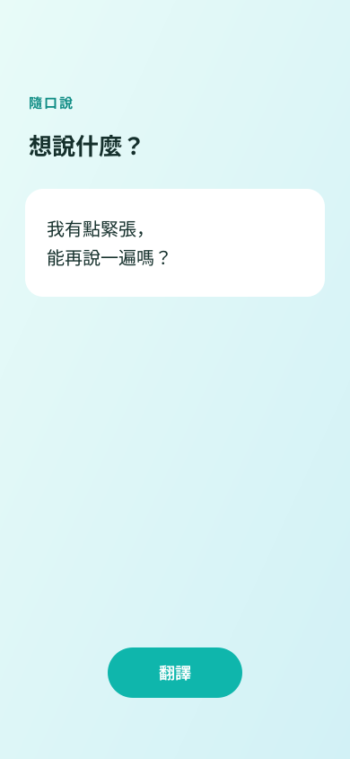
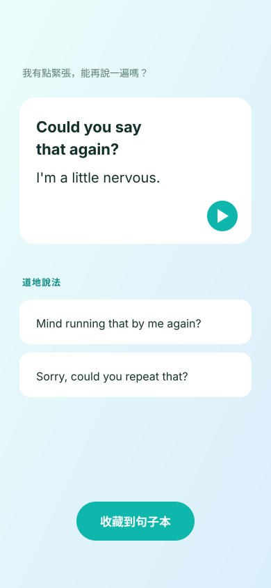
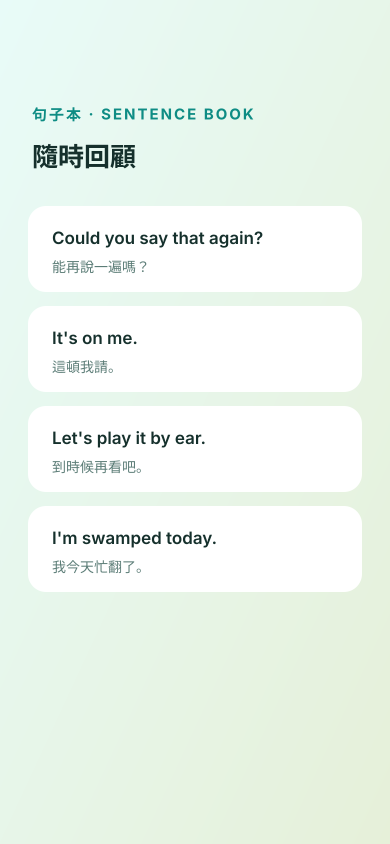

隨口說 · JustSayIt 脱口而出 · JustSayIt JustSayIt
說出中文，立刻得到道地的英文說法，聽發音、收藏到句子本，隨時回顧。 说出中文，立刻得到地道的英语说法，听发音、收藏到句子本，随时回顾。 Say it in Chinese and instantly get the natural English way to put it — hear it, save it, review anytime.


